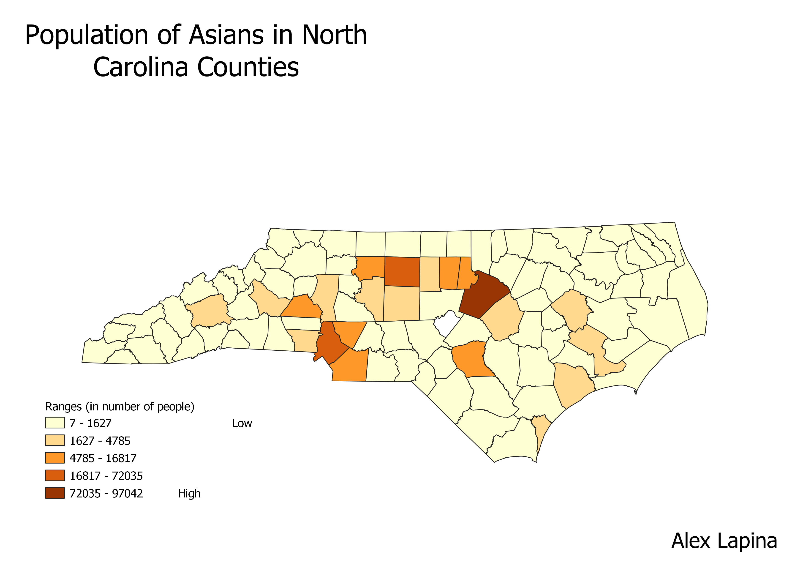

Homework 6: Census data choropleth
Alex Lapina
The population of Asians in North Carolina are concentrated mainly towards the center. The three counties with the largest populations of Asians are Wake County, Mecklenburg County, and Guilford County. Since the largest cities in NC - Charlotte, Raleigh, and Greensboro - are in these counties this makes sense because I would expect immigrants to be located in the largest cities.

Data used for this project
CSV dataset
Link to shapefile